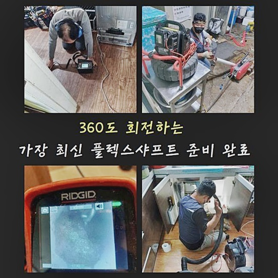
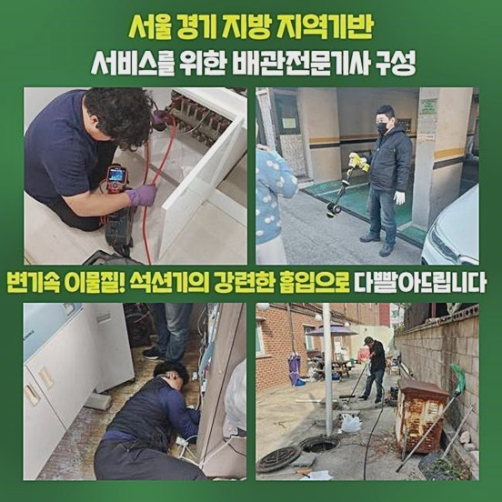
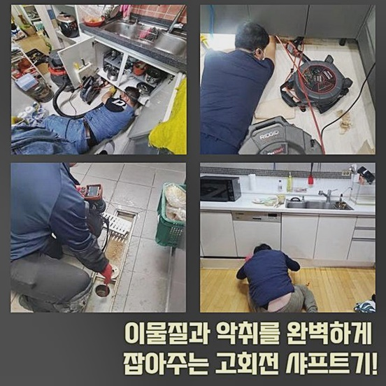
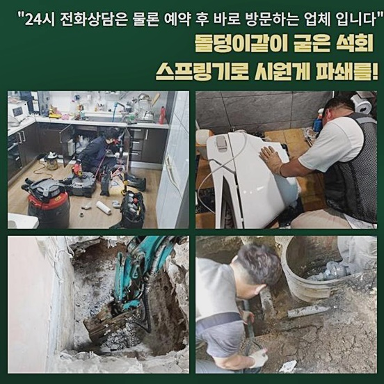
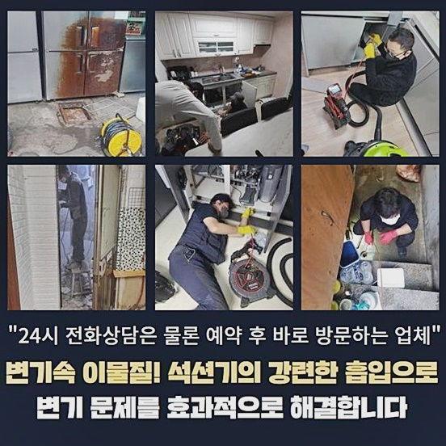
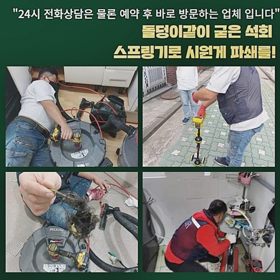
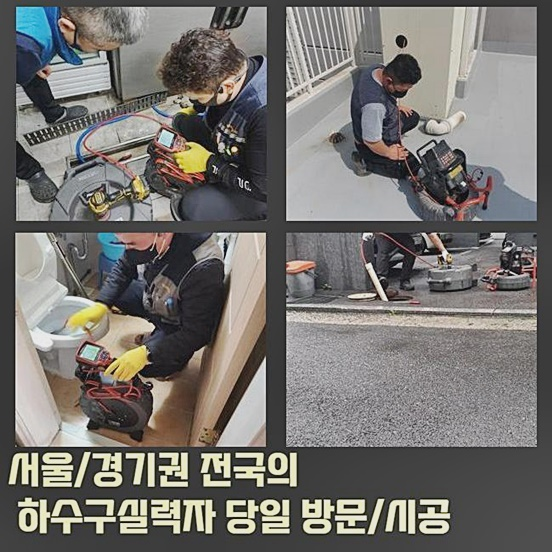

🏠 성동구 행당동변기막힘 성수동 하수구뚫는업체 설비
용인 변기막힘 전문 시공 후기

📋 작업 개요
- 위치: 용인
- 서비스 유형: 변기막힘, 하수구막힘, 배관막힘, 맨홀막힘, 역류해결, 뚫는업체, 배관청소, 고압세척
- 작업 일시: 2024. 8. 9. 11:42
- 업체명: 하수구수사대 (010-5615-2118)
🔍 문제 상황
성동구 행당동변기막힘 성수동 하수구뚫는업체 설비
하수도가 빈틈없이 막혀버렸다면 흔한 도구로는 처리하기 어려워요
심각한 막힘은 평범하게 물리적 힘을 가해 뚫는 것만으로는 해결되지 않으므로 전문성을 가진 해결이 요구됩니다
배관이 꽉 막혀버리면 물이 조금도 흐르지 않기 때문에 가정집이나 사무실에서 크나큰 문제들을 발생시킬 수 있습니다
그렇기 때문에 이러한 상태를 한꺼번에 확실히 수리해 줄 전문가를 불러와서 수리하는 것이 필요합니다
하수도 막힘 상황은 늦어지면 늦어질수록 해결이 힘들어질 수 있어서 빠르고 확실한 대응들이 중요합니다
어설프게 적당히 뚫는 경우 머지않아 동일한 문제들을 또 다시 겪어야 할지 모릅니다
이런 반복되는 사태는 노력과 비용들을 낭비하게 하고 이전보다 심각한 상황들을 발생시킬 수 있습니다
이번 작업장은 배수관 막힘 현상이 생겼다고 전화를 주셨어요
고객분께서는 하수배관 고압 물세척 요금에 대해 우려하셔서 문제를 확인해 본 후 말씀드렸습니다
요금 문제는 늘 중요하게 여기는 고려대상이기에 저희팀은 의뢰자분의 예산액 안에서 효과적인 방식을 적용하고자 전력을 다하였습니다
기쁘게도 생각한 재정범위 내에서 가능하리라 생각하셨고 일을 맡기기로 결정하셨어요
배수구가 막히는 일이 생긴다면 우선 어째서 이러한 문제가 생기게 되었는지 조사해야 합니다
평범하게 외적인 현상을 해결하기보다는 문제의 근본을 발견하는 것이 필요합니다
문제를 바로잡으려면 어떠한 절차를 시도할 것인지 고민한 뒤 실행하여야 합니다
현상의 근본을 분명히 알아내지 않고 임시조치로 해결한다면 유사한 문제상황이 되풀이 될 확률이 상당합니다
이런 땐 눈에 띄는 곳만 작업 한다고 해서 문제들이 해결되는 게 아닙니다

🔎 원인 분석
💡 전문가 진단: 정밀 진단 장비를 사용하여 슬러지의 고착 여부를 판명하고 타격/세척 작업을 실시했습니다.
배수관의 모양과 현장의 문제요인을 전체적으로 검토하여 최고의 방안을 발견해야 합니다
첫 번째층에 저온저장소와 하수구가 이어진 상태였는데 맨홀 부근이 막히면서 이곳이 역류하게 되며 지저분해졌습니다
역류 문제가 생기면 생활에 지장을 야기할뿐더러 불쾌한 환경과 금전적 피해들을 발생시킬 수 있어요
의뢰자분께 앞뒤 상황에 대해 들은뒤 막힘현상을 해결할 수 있도록 도구를 준비하였습니다
준설 시공차에서 도구를 준비한 다음 가장 낮은층으로 가서 상태들을 확인하였습니다
아무리 바빠도 어떻게 이렇게 된건지 이유를 파악하고 실행하여야 합니다
막힘현상이 일어난 요인을 정확하게 알아야지만 완벽한 시공이 가능합니다
내시경 기기로 검사를 해보니 맨홀 안에 물이 흐르지 않는 상태였습니다
이는 어느 지점이 막혀있다는 것을 시사합니다 물의 흐름이 없다면 물이 점차 고여서 끝내 넘쳐 흐르게 됩니다
염려되는 부분은 맨홀이 여기저기 있어서 막힘이 어디서 생겼는지 식별하기 어려웠어요
이러한 경우라면 개별적으로 현상을 거슬러 올라가며 원인을 발견해야합니다
이와 같은 때에는 역방향으로 확인하면서 고온의 고압클리닝으로 막힘문제를 해결할 수 있어요
고온과 고압으로 하는 청소는 강한 수압으로 하수관 안쪽의 오염물질을 없애는 적합한 방법입니다
준설차에서 가져온 온수고압노즐을 사용해 오염물을 없애기 시작했어요
고압분사기를 이용해 거센 물줄기로 찌꺼기를 분쇄하고 세정하게 됩니다
역류가 발생할만큼 심하게 막힌 상태였던 탓에 반복적으로 작업해도 뚫는것이 어려웠습니다
막힘이 심한 오염물은 강한 물발과 반복되는 노력으로만 제거가능합니다
저희는 되풀이되는 시도를 통해 결국에는 오염물질을 세척할 수 있었습니다

🔧 작업 과정
꾸준한 노력으로 결국에는 막힌배관을 해결할 수 있었어요
슬러지와 오염물질이 다량으로 배출되었습니다
이러한 찌꺼기는 하수도를 대체로 막히도록 하는 주요한 이유입니다
의뢰인께서 이야기하시기를 집을 짓고 나서 한 차례도 막힌적이 없었기 때문에 그저 지냈다고 말씀하셨어요
오랜세월동안 쌓여온 불순물들은 나중에는 심각한 사태를 야기시키게 됩니다
수 십년간 축적된 이물질이 모여서 역류하게 된 것입니다
축적된 오염물과 슬러지들은 배수구의 흐름을 막으며 결국 하수를 역류시킵니다
중간중간 내시경 기기를 이용하여 하수관 막힌 부분을 파악했습니다
내시경 장치는 하수도 속의 여건들을 세밀하게 검사할 수 있는 핵심 기구입니다
큰 조각들을 쉽게 없애면 되지만 배관 안쪽에 고착된 이물질은 잘못 처리할 경우 배관에 부담이 될 수 있으므로 신중하게 제거하였습니다
배수로에 충격이 가해지면 심각한 손상이 일어날 수 있어서 주의해야합니다
저희 기술자들은 확실한 서비스를 통해 적정 요금으로 배수관 고압물청소을 진행하고 있습니다
꼼꼼한 조치와 적정 수리비로 고객 만족을 위한 중요한 요인이예요
높은층의 수직배관과 저층의 하수배관을 체크해보니 키친타올들이 그득했습니다
물티슈는 배수관에 심각한 막힘을 야기할 수 있는 가장 흔한 요인 중 하나로 볼 수 있습니다
키친타올은 하수배관에 넣으면 문제가 되기에 고객님들께 기억해 달라며 권고드렸습니다
물티슈는 시간이 지나도 분해되지 않기 때문에 하수배관을 대부분 막아버립니다
모든 공정이 마치고나서 내시경 기기를 활용해 또다시 안쪽 상황을 살펴보았습니다
시공후에도 배관을 체크하는건 이상이 완벽하게 청소되었는지 검토하는 핵심적인 프로세스입니다
불순물이 확실하게 청소되어 배수구가 잘 통수되는 것을 파악하였습니다
배수구가 순조롭게 물이 흐르면 다시는 물이 넘치지 않아요
고객분께도 작업 전후의 상태를 보여드리고 앞으로는 잘 관리해보겠다는 이야기를 들었습니다
의뢰인께 작업 전후의 상황을 설명하여 믿음을 구축할 수 있었습니다
마무리 절차로 상황이 심각했던 냉장창고에 들어가 역류했던 물이 배수됐는지 파악하고 바닥을 말끔히 청소하였습니다
정리정돈은 시공의 마지막 순서로 현장의 문제를 완벽히 처리하는데 핵심 역할이 됩니다
환기시스템을 활용해 악취를 없애면서 수리를 끝냈습니다
불쾌한냄새 제거과정은 청결한 공간을 만들기 위해 필요합니다
배수관 막힘은 신속히 처리해야 하는 중대한 사안입니다


✅ 작업 완료
하수도 막힘현상은 그대로 두면 더욱 큰 문제현상을 초래할 수 있어요
혹시 지금 문제점이 보인다면 언제라도 의뢰해주시면 고급 전문 장비들로 조속히 개선해드릴게요
막힘이 나타났을 시 조속한 조치는 별도의 손해를 예방할 수 있습니다
이번 작업장의 고압클리닝 금액도 적정선에서 책정했어요
적정 수리비로 고객님께 신뢰도를 주는 주요 항목입니다
이번 작업처럼 복잡한 사안외에 사소한 이슈라도 전문기술자의 지원이 필요하다면 밤낮없이 저희 기술자에게 연락주시기 바랍니다
전문팀의 기술은 문제현상을 빠르면서도 제대로 처리하는데 필요합니다 합당한 금액으로 빠르면서도 꼼꼼하게 문제상황을 처리해 드릴게요
걱정 없이 문의하세요 빠르고 확실한 서비스는 소비자 만족을 위한 주요 항목입니다




⚠️ 하수구 배관 막힘 예방 및 관리 가이드
- ✅ 머리카락, 비닐, 물티슈 등 물에 분해되지 않는 이물질은 하수구 유입을 절대 금지해 주세요.
- ✅ 하수구 거름망을 씌우고 모여진 이물질은 주기적으로 쓰레기통에 바로 비워주셔야 합니다.
- ✅ 배관 노후가 심할 경우 이물질이 더 쉽게 걸리므로 주기적인 배관 세척(고압세척 등)을 권장합니다.
- ✅ 작업 후 1년 이내 재발 시 하수구수사대에서 무상 A/S 보증 서비스를 제공합니다.
💡 핵심 정리
- 확실한 장비 작업(내시경 점검 및 샤프트 스케일링)으로 원인을 뿌리 뽑습니다.
- 작업 후 1년 이내에 동일한 부위 재발 시 100% 무상 A/S 서비스를 보장합니다.
- 서울 · 경기 · 인천 전 지역에 24시간 언제든 긴급 출동할 수 있도록 항시 대기 중입니다.
❓ 자주 묻는 질문 (FAQ)
🚨 용인 변기막힘 문제로 고민이신가요?
정확한 원인 진단과 확실한 시공으로 재발 없는 해결을 약속드립니다.
24시간 긴급 출동 | 서울 · 경기 · 인천 전지역 | 1년 내 재발 시 무상 A/S